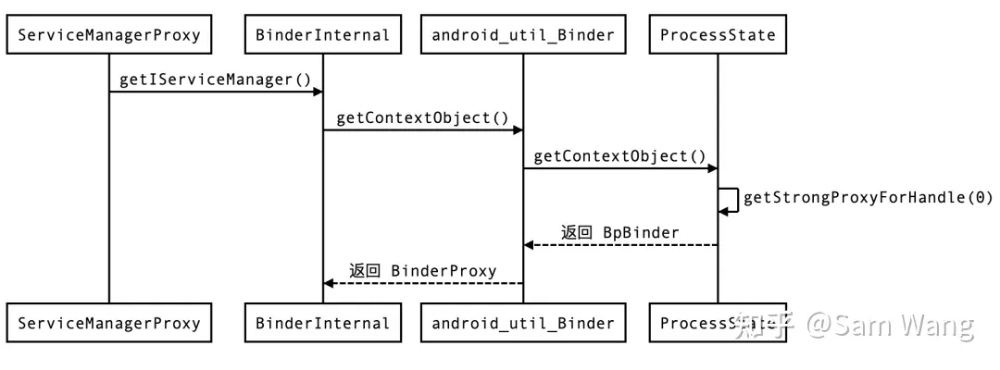

深入 Binder 之 servicemanager 进程
主例程
servicemanager 进程是由 init 进程通过 servicemanager.rc 配置文件启动的，其所在的可执行文件在 system/bin/servicemanager，对应的源文件是 /platform/frameworks/native/cmds/servicemanager/main.cpp
service servicemanager /system/bin/servicemanager
class core animation
user system
group system readproc
critical
onrestart restart apexd
onrestart restart audioserver
onrestart restart gatekeeperd
onrestart class_restart main
onrestart class_restart hal
onrestart class_restart early_hal
writepid /dev/cpuset/system-background/tasks
shutdown criticalservicemanager 是 Binder IPC 过程中的守护进程，是一个具体的服务，其功能主要是 查询 和 注册服务
// https://android.googlesource.com/platform/frameworks/native/+/refs/tags/android-mainline-12.0.0_r114/cmds/servicemanager/main.cpp
int main(int argc, char** argv) {
if (argc > 2) {
LOG(FATAL) << "usage: " << argv[0] << " [binder driver]";
}
const char* driver = argc == 2 ? argv[1] : "/dev/binder"; // binder IPC 的默认地址是 /dev/binder
// 初始化 binder 连接
sp<ProcessState> ps = ProcessState::initWithDriver(driver);
ps->setThreadPoolMaxThreadCount(0); // ioctl(mDriverFD, BINDER_SET_MAX_THREADS, &maxThreads)
ps->setCallRestriction(ProcessState::CallRestriction::FATAL_IF_NOT_ONEWAY);
// 注册成为 binder 的服务管理器（ContextManager），id == 0，handle == 0
sp<ServiceManager> manager = sp<ServiceManager>::make(std::make_unique<Access>());
if (!manager->addService("manager", manager, false /*allowIsolated*/, IServiceManager::DUMP_FLAG_PRIORITY_DEFAULT).isOk()) {
LOG(ERROR) << "Could not self register servicemanager";
}
// IPCThreadState 实例是线程本地变量（thread local），通过 IPCThreadState::self() 获得
// cpp 通过 pthread_getspecific(key) 和 pthread_setspecific(key, value) 设置/获取线程本地变量
IPCThreadState::self()->setTheContextObject(manager);
ps->becomeContextManager(); // BINDER_SET_CONTEXT_MGR_EXT
// 开始主循环：提供注册&查询服务
sp<Looper> looper = Looper::prepare(false /*allowNonCallbacks*/);
BinderCallback::setupTo(looper);
ClientCallbackCallback::setupTo(looper, manager);
while(true) {
looper->pollAll(-1);
}
// should not be reached
return EXIT_FAILURE;
}初始化 binder 连接
- 通过系统调用
open打开/dev/binder得到 binder 驱动的文件描述符 fd - 通过
ioctl与 binder 驱动交互进行一系列的初始化操作- BINDER_VERSION 版本校验
- BINDER_SET_MAX_THREADS 设置 binder 驱动线程池的容量
- BINDER_ENABLE_ONEWAY_SPAM_DETECTION
- …
- 通过
mmap在 servicemanager 进程分配一块虚存用以后续使用（对应 binder 驱动的binder_mmap）
// https://android.googlesource.com/platform/frameworks/native/+/refs/tags/android-mainline-12.0.0_r114/libs/binder/ProcessState.cpp
sp<ProcessState> ProcessState::initWithDriver(const char* driver) { return init(driver, true /*requireDefault*/); }
sp<ProcessState> ProcessState::init(const char *driver, bool requireDefault) {...}
ProcessState::ProcessState(const char *driver) // driver 参数是指 binder 的路径：/dev/binder
: mDriverName(String8(driver)) // 记录 binder 路径
, mDriverFD(open_driver(driver)) // 打开 binder 并记录下它的 fd
, mVMStart(MAP_FAILED) // mmap 分配的一块内存空间，后续会用到
, mThreadCountLock(PTHREAD_MUTEX_INITIALIZER)
, mThreadCountDecrement(PTHREAD_COND_INITIALIZER)
, mExecutingThreadsCount(0)
, mWaitingForThreads(0)
, mMaxThreads(DEFAULT_MAX_BINDER_THREADS)
, mStarvationStartTimeMs(0)
, mThreadPoolStarted(false)
, mThreadPoolSeq(1)
, mCallRestriction(CallRestriction::NONE)
{
if (mDriverFD >= 0) {
// mmap the binder, providing a chunk of virtual address space to receive transactions.
mVMStart = mmap(nullptr, BINDER_VM_SIZE, PROT_READ, MAP_PRIVATE | MAP_NORESERVE, mDriverFD, 0);
if (mVMStart == MAP_FAILED) {
ALOGE("Using %s failed: unable to mmap transaction memory.\n", mDriverName.c_str());
close(mDriverFD);
mDriverFD = -1;
mDriverName.clear();
}
}
}
// 打开 binder driver 得到 fd，同时会通过 ioctl 设置一些初始参数
static int open_driver(const char *driver /* /dev/binder */)
{
int fd = open(driver, O_RDWR | O_CLOEXEC); // 打开 binder driver 得到其 fd，后续通过 ioctl 与 binder driver 通讯
if (fd >= 0) {
int vers = 0;
status_t result = ioctl(fd, BINDER_VERSION, &vers); // 校验 binder driver 版本
if (result == -1) {
ALOGE("Binder ioctl to obtain version failed: %s", strerror(errno));
close(fd);
fd = -1;
}
if (result != 0 || vers != BINDER_CURRENT_PROTOCOL_VERSION) {
ALOGE("Binder driver protocol(%d) does not match user space protocol(%d)! ioctl() return value: %d",
vers, BINDER_CURRENT_PROTOCOL_VERSION, result);
close(fd);
fd = -1;
}
size_t maxThreads = DEFAULT_MAX_BINDER_THREADS; // 使用 ioctl 设置 binder 的线程池数量
result = ioctl(fd, BINDER_SET_MAX_THREADS, &maxThreads);
if (result == -1) {
ALOGE("Binder ioctl to set max threads failed: %s", strerror(errno));
}
uint32_t enable = DEFAULT_ENABLE_ONEWAY_SPAM_DETECTION;
result = ioctl(fd, BINDER_ENABLE_ONEWAY_SPAM_DETECTION, &enable);
if (result == -1) {
ALOGD("Binder ioctl to enable oneway spam detection failed: %s", strerror(errno));
}
} else {
ALOGW("Opening '%s' failed: %s\n", driver, strerror(errno));
}
return fd;
}注册为服务管理器
- 通过
ioctl(BINDER_SET_CONTEXT_MGR_EXT)在 binder driver 将自己注册为服务管理器binder_context_mgr_node，handle == 0 - 将
ServiceManager注册为本地进程响应 binder 消息的服务管理器：IPCThreadState::self()->setTheContextObject(manager) - 将
ServiceManager实例自己给自己注册为manager - 服务管理器的作用后面会讲到，主要是处理 handle == 0 的情况，client 查找 server 时得先有 service_manager 标识
// ServiceManager 内部维护了一个 map：mNameToService，string -> IBinder
// 这里将自己添加进去：manager -> ServiceManager
// https://android.googlesource.com/platform/frameworks/native/+/refs/tags/android-mainline-12.0.0_r114/cmds/servicemanager/ServiceManager.cpp
Status ServiceManager::addService(
const std::string& name /* manager */,
const sp<IBinder>& binder /* this */,
bool allowIsolated /* false */,
int32_t dumpPriority /* IServiceManager::DUMP_FLAG_PRIORITY_DEFAULT */
) {
auto ctx = mAccess->getCallingContext();
// apps cannot add services
if (multiuser_get_app_id(ctx.uid) >= AID_APP) {
return Status::fromExceptionCode(Status::EX_SECURITY);
}
if (!mAccess->canAdd(ctx, name)) {
return Status::fromExceptionCode(Status::EX_SECURITY);
}
if (binder == nullptr) {
return Status::fromExceptionCode(Status::EX_ILLEGAL_ARGUMENT);
}
if (!isValidServiceName(name)) {
LOG(ERROR) << "Invalid service name: " << name;
return Status::fromExceptionCode(Status::EX_ILLEGAL_ARGUMENT);
}
// implicitly unlinked when the binder is removed
if (binder->remoteBinder() != nullptr &&
binder->linkToDeath(sp<ServiceManager>::fromExisting(this)) != OK) {
LOG(ERROR) << "Could not linkToDeath when adding " << name;
return Status::fromExceptionCode(Status::EX_ILLEGAL_STATE);
}
// Overwrite the old service if it exists
mNameToService[name] = Service {
.binder = binder,
.allowIsolated = allowIsolated,
.dumpPriority = dumpPriority,
.debugPid = ctx.debugPid,
};
auto it = mNameToRegistrationCallback.find(name);
if (it != mNameToRegistrationCallback.end()) {
for (const sp<IServiceCallback>& cb : it->second) {
mNameToService[name].guaranteeClient = true;
// permission checked in registerForNotifications
cb->onRegistration(name, binder);
}
}
return Status::ok();
}
// 发送消息 BINDER_SET_CONTEXT_MGR_EXT 给 binder，使自己成为服务管理器
// https://android.googlesource.com/platform/frameworks/native/+/refs/tags/android-mainline-12.0.0_r114/libs/binder/ProcessState.cpp
bool ProcessState::becomeContextManager()
{
AutoMutex _l(mLock);
flat_binder_object obj {
.flags = FLAT_BINDER_FLAG_TXN_SECURITY_CTX,
};
int result = ioctl(mDriverFD, BINDER_SET_CONTEXT_MGR_EXT, &obj);
// fallback to original method
if (result != 0) {
android_errorWriteLog(0x534e4554, "121035042");
int unused = 0;
result = ioctl(mDriverFD, BINDER_SET_CONTEXT_MGR, &unused);
}
if (result == -1) {
ALOGE("Binder ioctl to become context manager failed: %s\n", strerror(errno));
}
return result == 0;
}
// https://android.googlesource.com/kernel/common/+/refs/tags/android-13.0.0_r0.20/drivers/android/binder.c
static long binder_ioctl(struct file *filp, unsigned int cmd, unsigned long arg)
{
switch (cmd) {
// ...
case BINDER_SET_CONTEXT_MGR_EXT: {
struct flat_binder_object fbo;
if (copy_from_user(&fbo, ubuf, sizeof(fbo))) {
ret = -EINVAL;
goto err;
}
ret = binder_ioctl_set_ctx_mgr(filp, &fbo);
if (ret)
goto err;
break;
}
// ...
}
}
static int binder_ioctl_set_ctx_mgr(struct file *filp,
struct flat_binder_object *fbo)
{
// ...
struct binder_proc *proc = filp->private_data;
struct binder_context *context = proc->context;
struct binder_node *new_node;
new_node = binder_new_node(proc, fbo);
binder_node_lock(new_node);
new_node->local_weak_refs++;
new_node->local_strong_refs++;
new_node->has_strong_ref = 1;
new_node->has_weak_ref = 1;
context->binder_context_mgr_node = new_node;
binder_node_unlock(new_node);
binder_put_node(new_node);
}
开始 binder 消息循环
epoll监听 driver fd，当 binder 发消息过来时（Looper::EVENT_INPUT）主动调用IPCThreadState::self()->handlePolledCommands()处理 binder 消息ServiceManager继承自BnServiceManager得到onTransact方法，BnServiceManager 是类似于 AIDL 这样的机制自动生成的代码，根据 aidl code 调用对应的业务方法，并从Parcel解包请求参数，将响应打包至Parcel
// https://android.googlesource.com/platform/frameworks/native/+/refs/tags/android-mainline-12.0.0_r114/cmds/servicemanager/main.cpp
int main(int argc, char** argv) {
// ...
// 开始主循环
sp<Looper> looper = Looper::prepare(false /*allowNonCallbacks*/);
BinderCallback::setupTo(looper);
ClientCallbackCallback::setupTo(looper, manager);
while(true) {
looper->pollAll(-1);
}
// should not be reached
return EXIT_FAILURE;
}
// https://android.googlesource.com/platform/frameworks/native/+/refs/tags/android-mainline-12.0.0_r114/cmds/servicemanager/main.cpp
class BinderCallback : public LooperCallback {
public:
static sp<BinderCallback> setupTo(const sp<Looper>& looper) {
sp<BinderCallback> cb = sp<BinderCallback>::make();
int binder_fd = -1;
IPCThreadState::self()->setupPolling(&binder_fd); // 获得已打开的 binder driver fd
LOG_ALWAYS_FATAL_IF(binder_fd < 0, "Failed to setupPolling: %d", binder_fd);
int ret = looper->addFd(binder_fd, // binder 发消息过来时回调 handlePolledCommands
Looper::POLL_CALLBACK,
Looper::EVENT_INPUT,
cb,
nullptr /*data*/);
LOG_ALWAYS_FATAL_IF(ret != 1, "Failed to add binder FD to Looper");
return cb;
}
int handleEvent(int /* fd */, int /* events */, void* /* data */) override {
IPCThreadState::self()->handlePolledCommands();
return 1; // Continue receiving callbacks.
}
};
// binder 有消息过来，需要处理
// https://cs.android.com/android/platform/superproject/+/master:frameworks/native/libs/binder/IPCThreadState.cpp
status_t IPCThreadState::handlePolledCommands()
{
// ...
result = getAndExecuteCommand();
}
status_t IPCThreadState::getAndExecuteCommand()
{
// ...
result = talkWithDriver();
cmd = mIn.readInt32()
result = executeCommand(cmd);
}
status_t IPCThreadState::executeCommand(int32_t cmd)
{
// ...
switch ((uint32_t)cmd) {
case BR_TRANSACTION_SEC_CTX:
case BR_TRANSACTION:
{
binder_transaction_data_secctx tr_secctx;
binder_transaction_data& tr = tr_secctx.transaction_data;
if (cmd == (int) BR_TRANSACTION_SEC_CTX) {
result = mIn.read(&tr_secctx, sizeof(tr_secctx));
} else {
result = mIn.read(&tr, sizeof(tr));
tr_secctx.secctx = 0;
}
if (tr.target.ptr) {
// ...
} else {
// client 想要访问 service_manager 只需要构造一个 BpBinder(handle = 0)
// binder driver 遇到 handle == 0 会交由注册的服务管理器处理（也就是 service_manager）
// 在 service_manager 进程内响应 binder 消息时，遇到 handle == 0 又会交由 the_context_object 处理
// 它其实是 ServiceManager 实例，上一章节讲过
error = the_context_object->transact(tr.code, buffer, &reply, tr.flags);
}
// 返回响应数据
if ((tr.flags & TF_ONE_WAY) == 0) {
sendReply(reply, (tr.flags & kForwardReplyFlags));
// ...
}
}
// BnServiceManager 看起来跟 AIDL 一样是自动生成的代码
// https://cs.android.com/android/platform/superproject/+/master:frameworks/native/cmds/servicemanager/ServiceManager.h
class ServiceManager : public os::BnServiceManager, public IBinder::DeathRecipient {
public:
binder::Status getService(const std::string& name, sp<IBinder>* outBinder) override;
binder::Status checkService(const std::string& name, sp<IBinder>* outBinder) override;
binder::Status addService(const std::string& name, const sp<IBinder>& binder,
bool allowIsolated, int32_t dumpPriority) override;
// ...
// https://cs.android.com/android/platform/superproject/+/master:out/soong/.intermediates/frameworks/native/libs/binder/libbinder/android_recovery_x86_64_silvermont_shared/gen/aidl/android/os/BnServiceManager.h
class BnServiceManager : public ::android::BnInterface<IServiceManager> {
public:
static constexpr uint32_t TRANSACTION_getService = ::android::IBinder::FIRST_CALL_TRANSACTION + 0;
static constexpr uint32_t TRANSACTION_checkService = ::android::IBinder::FIRST_CALL_TRANSACTION + 1;
static constexpr uint32_t TRANSACTION_addService = ::android::IBinder::FIRST_CALL_TRANSACTION + 2;
static constexpr uint32_t TRANSACTION_listServices = ::android::IBinder::FIRST_CALL_TRANSACTION + 3;
static constexpr uint32_t TRANSACTION_registerForNotifications = ::android::IBinder::FIRST_CALL_TRANSACTION + 4;
static constexpr uint32_t TRANSACTION_unregisterForNotifications = ::android::IBinder::FIRST_CALL_TRANSACTION + 5;
static constexpr uint32_t TRANSACTION_isDeclared = ::android::IBinder::FIRST_CALL_TRANSACTION + 6;
static constexpr uint32_t TRANSACTION_getDeclaredInstances = ::android::IBinder::FIRST_CALL_TRANSACTION + 7;
static constexpr uint32_t TRANSACTION_updatableViaApex = ::android::IBinder::FIRST_CALL_TRANSACTION + 8;
static constexpr uint32_t TRANSACTION_getConnectionInfo = ::android::IBinder::FIRST_CALL_TRANSACTION + 9;
static constexpr uint32_t TRANSACTION_registerClientCallback = ::android::IBinder::FIRST_CALL_TRANSACTION + 10;
static constexpr uint32_t TRANSACTION_tryUnregisterService = ::android::IBinder::FIRST_CALL_TRANSACTION + 11;
static constexpr uint32_t TRANSACTION_getServiceDebugInfo = ::android::IBinder::FIRST_CALL_TRANSACTION + 12;
explicit BnServiceManager();
::android::status_t onTransact(uint32_t _aidl_code, const ::android::Parcel& _aidl_data, ::android::Parcel* _aidl_reply, uint32_t _aidl_flags) override;
}; // class BnServiceManager
// https://cs.android.com/android/platform/superproject/+/master:out/soong/.intermediates/frameworks/native/libs/binder/libbinder/android_x86_64_silvermont_shared_fuzzer/gen/aidl/android/os/IServiceManager.cpp
::android::status_t BnServiceManager::onTransact(uint32_t _aidl_code, const ::android::Parcel& _aidl_data, ::android::Parcel* _aidl_reply, uint32_t _aidl_flags) {
::android::status_t _aidl_ret_status = ::android::OK;
switch (_aidl_code) {
case BnServiceManager::TRANSACTION_getService:
{
::std::string in_name;
::android::sp<::android::IBinder> _aidl_return;
if (!(_aidl_data.checkInterface(this))) {
_aidl_ret_status = ::android::BAD_TYPE;
break;
}
::android::binder::ScopedTrace _aidl_trace(ATRACE_TAG_AIDL, "AIDL::cpp::IServiceManager::getService::cppServer");
_aidl_ret_status = _aidl_data.readUtf8FromUtf16(&in_name);
if (((_aidl_ret_status) != (::android::OK))) {
break;
}
if (auto st = _aidl_data.enforceNoDataAvail(); !st.isOk()) {
_aidl_ret_status = st.writeToParcel(_aidl_reply);
break;
}
::android::binder::Status _aidl_status(getService(in_name, &_aidl_return));
_aidl_ret_status = _aidl_status.writeToParcel(_aidl_reply);
if (((_aidl_ret_status) != (::android::OK))) {
break;
}
if (!_aidl_status.isOk()) {
break;
}
_aidl_ret_status = _aidl_reply->writeStrongBinder(_aidl_return);
if (((_aidl_ret_status) != (::android::OK))) {
break;
}
}
break;
case BnServiceManager::TRANSACTION_addService:
{
::std::string in_name;
::android::sp<::android::IBinder> in_service;
bool in_allowIsolated;
int32_t in_dumpPriority;
if (!(_aidl_data.checkInterface(this))) {
_aidl_ret_status = ::android::BAD_TYPE;
break;
}
::android::binder::ScopedTrace _aidl_trace(ATRACE_TAG_AIDL, "AIDL::cpp::IServiceManager::addService::cppServer");
_aidl_ret_status = _aidl_data.readUtf8FromUtf16(&in_name);
if (((_aidl_ret_status) != (::android::OK))) {
break;
}
_aidl_ret_status = _aidl_data.readStrongBinder(&in_service);
if (((_aidl_ret_status) != (::android::OK))) {
break;
}
_aidl_ret_status = _aidl_data.readBool(&in_allowIsolated);
if (((_aidl_ret_status) != (::android::OK))) {
break;
}
_aidl_ret_status = _aidl_data.readInt32(&in_dumpPriority);
if (((_aidl_ret_status) != (::android::OK))) {
break;
}
if (auto st = _aidl_data.enforceNoDataAvail(); !st.isOk()) {
_aidl_ret_status = st.writeToParcel(_aidl_reply);
break;
}
::android::binder::Status _aidl_status(addService(in_name, in_service, in_allowIsolated, in_dumpPriority));
_aidl_ret_status = _aidl_status.writeToParcel(_aidl_reply);
if (((_aidl_ret_status) != (::android::OK))) {
break;
}
if (!_aidl_status.isOk()) {
break;
}
}
break;
// ...注册
暴露自己
看看其他进程（client）是如何使用 servicemanager 提供的查询服务的，随便找个 biner ipc 比如 ActivityManager.getRunningAppProcesses() 开始深入下去：
内部是调用了
IActivityManager.getRunningAppProcesses()，IActivityManager明显是个 binder ipc，它的 binder client proxy 是从ServiceManager.getService获取的ServiceManager内部调用了IServiceManager.getService，看起来IServiceManager又是个 binder ipc，它的 proxy 是从BinderInternal.getContextObject()获得的往下看发现
IServiceManager的 proxy 实际上是个 handle == 0 的BpBinder（binder client 包括 java 层的BinderProxy和 native 层的BpBinder）binder ipc 过程中，client 通过
ioctl(binder_fd, BC_TRANSACTION, binder_transaction_data)将 request 发送给 binder driver，再由 binder driver 根据binder_transaction_data.target.handle字段找到对应的 server 将 request 转发给它，具体流程是binder_ioctl -> binder_ioctl_write_read -> binder_thread_write -> binder_transaction在
binder_transaction可以看到如果发现 handle == 0 则取binder_context_mgr_node作为 target server，而在章节 注册为服务管理器 有说到 servicemanager 进程会通过BINDER_SET_CONTEXT_MGR_EXT/binder_ioctl_set_ctx_mgr把自己注册至binder_context_mgr_node
整理下逻辑：app 进行 binder ipc 时需要得到 target server handle，可以通过 ServiceManager.getService 查询得到，这个 ipc 方法最终会调用 servicemanager 进程提供的查询功能；而 servicemanager 早已在 binder driver 里把自己注册为服务管理器（binder_context_mgr_node，handle == 0），这样 app 进程就无需再进行查找即可调用 ServiceManager

class ActivityManager {
public List<RunningAppProcessInfo> getRunningAppProcesses() {
try {
return getService().getRunningAppProcesses();
} catch (RemoteException e) {
throw e.rethrowFromSystemServer();
}
}
// IActivityManager 看起来像是 aidl 生成的 java interface
// 一搜果然没有 IActivityManager.java 只有 frameworks/base/core/java/android/app/IActivityManager.aidl
public static IActivityManager getService() {
return IActivityManagerSingleton.get();
}
private static final Singleton<IActivityManager> IActivityManagerSingleton =
new Singleton<IActivityManager>() {
@Override
protected IActivityManager create() {
final IBinder b = ServiceManager.getService(Context.ACTIVITY_SERVICE);
final IActivityManager am = IActivityManager.Stub.asInterface(b); // 获得 client proxy，真正与 server 通讯的是 b
// 参考【深入 Binder 之 AIDL】
return am;
}
};
}
// 看看如何获取 IActivityManager client binder
class ServiceManager {
public static IBinder getService(String name) {
try {
IBinder service = sCache.get(name);
if (service != null) {
return service;
} else {
return Binder.allowBlocking(rawGetService(name));
}
} catch (RemoteException e) {
Log.e(TAG, "error in getService", e);
}
return null;
}
private static IBinder rawGetService(String name) throws RemoteException {
final long start = sStatLogger.getTime();
final IBinder binder = getIServiceManager().getService(name); // IServiceManager? 看起来又是一个 aidl，又是一个 binder ipc
// ... // 即是 IActivityManager client binder 是从 IServiceManager server 获得的
return binder;
}
// 有了上面的经验就可以很快地知道 IServiceManager.Stub.asInterface(remote) 返回的是 IServiceManager client proxy
// 真正的通讯是由 BinderInternal.getContextObject() 得到的 client binder 实现的
private static IServiceManager getIServiceManager() {
if (sServiceManager != null) {
return sServiceManager;
}
// Find the service manager
sServiceManager = ServiceManagerNative
.asInterface(Binder.allowBlocking(BinderInternal.getContextObject()));
return sServiceManager;
}
}
public static IServiceManager ServiceManagerNative.asInterface(IBinder obj) {
return new ServiceManagerProxy(obj);
}
class ServiceManagerProxy implements IServiceManager {
public ServiceManagerProxy(IBinder remote) {
mRemote = remote;
mServiceManager = IServiceManager.Stub.asInterface(remote);
}
}
public static final native IBinder BinderInternal.getContextObject();// frameworks/base/core/jni/android_util_Binder.cpp
static jobject android_os_BinderInternal_getContextObject(JNIEnv* env, jobject clazz)
{
sp<IBinder> b = ProcessState::self()->getContextObject(NULL);
// If the argument is a JavaBBinder, return the Java object that was used to create it.
// Otherwise return a BinderProxy for the IBinder. If a previous call was passed the
// same IBinder, and the original BinderProxy is still alive, return the same BinderProxy.
return javaObjectForIBinder(env, b); // 返回 java 层的 BinderProxy 实例
}
// frameworks/native/libs/binder/ProcessState.cpp
sp<IBinder> ProcessState::getContextObject(const sp<IBinder>& /*caller*/)
{
sp<IBinder> context = getStrongProxyForHandle(0);
return context;
}
sp<IBinder> ProcessState::getStrongProxyForHandle(int32_t handle) // handle == 0
{
sp<IBinder> result;
AutoMutex _l(mLock);
if (handle == 0 && the_context_object != nullptr) return the_context_object;
handle_entry* e = lookupHandleLocked(handle); // 有个成员属性 Vector<handle_entry> mHandleToObject 用以缓存 IBinder
if (e != nullptr) { // 当 handle 所在位置为空时会创建一个新的 entry 实例返回
IBinder* b = e->binder; // 此时 b == null
if (b == nullptr || !e->refs->attemptIncWeak(this)) {
//...
sp<BpBinder> b = BpBinder::PrivateAccessor::create(handle); // 这里的 IBinder 是 BpBinder，而且是 handle == 0 的 BpBinder
e->binder = b.get();
if (b) e->refs = b->getWeakRefs();
result = b;
} else {
// This little bit of nastyness is to allow us to add a primary
// reference to the remote proxy when this team doesn't have one
// but another team is sending the handle to us.
result.force_set(b);
e->refs->decWeak(this);
}
}
return result;
}
// 从【深入 Binder 之架构篇】知道 BpBinder 是 native client，负责：
// 从 servicemanager 查找 service handle，然后将 request 发送给 binder driver，由 binder driver 转发 request 给目标 server
// 但 servicemanager handler 又得从哪里获取呢？答案很简单，它的 handle == 0，无需通过查找获得，只要 handle == 0 就表示 server 是 service manager
// 看看在 binder driver 里是如何处理 handle == 0 的情况得
// https://cs.android.com/android/kernel/superproject/+/common-android-mainline:common/drivers/android/binder.c
static long binder_ioctl(struct file *filp, unsigned int cmd, unsigned long arg)
{
// ...
switch (cmd) {
case BINDER_WRITE_READ:
ret = binder_ioctl_write_read(filp, cmd, arg, thread);
if (ret)
goto err;
break;
case BINDER_SET_MAX_THREADS:
case BINDER_SET_CONTEXT_MGR_EXT: {
// ...
}
}
static int binder_ioctl_write_read(struct file *filp,
unsigned int cmd, unsigned long arg,
struct binder_thread *thread)
{
int ret = 0;
struct binder_proc *proc = filp->private_data;
unsigned int size = _IOC_SIZE(cmd);
void __user *ubuf = (void __user *)arg;
struct binder_write_read bwr;
if (size != sizeof(struct binder_write_read)) {
ret = -EINVAL;
goto out;
}
if (copy_from_user(&bwr, ubuf, sizeof(bwr))) {
ret = -EFAULT;
goto out;
}
if (bwr.write_size > 0) {
ret = binder_thread_write(proc, thread,
bwr.write_buffer,
bwr.write_size,
&bwr.write_consumed);
trace_binder_write_done(ret);
if (ret < 0) {
bwr.read_consumed = 0;
if (copy_to_user(ubuf, &bwr, sizeof(bwr)))
ret = -EFAULT;
goto out;
}
}
if (bwr.read_size > 0)
// ...
}
static int binder_thread_write(struct binder_proc *proc,
struct binder_thread *thread,
binder_uintptr_t binder_buffer, size_t size,
binder_size_t *consumed)
{
uint32_t cmd;
struct binder_context *context = proc->context;
void __user *buffer = (void __user *)(uintptr_t)binder_buffer;
void __user *ptr = buffer + *consumed;
void __user *end = buffer + size;
while (ptr < end && thread->return_error.cmd == BR_OK) {
int ret;
if (get_user(cmd, (uint32_t __user *)ptr))
return -EFAULT;
ptr += sizeof(uint32_t);
switch (cmd) {
case BC_TRANSACTION:
case BC_REPLY: {
struct binder_transaction_data tr;
if (copy_from_user(&tr, ptr, sizeof(tr)))
return -EFAULT;
ptr += sizeof(tr);
binder_transaction(proc, thread, &tr, cmd == BC_REPLY, 0);
break;
}
// ...
}
*consumed = ptr - buffer;
}
return 0;
}
static void binder_transaction(struct binder_proc *proc,
struct binder_thread *thread,
struct binder_transaction_data *tr, int reply,
binder_size_t extra_buffers_size)
{
// ...
if (reply) {
// server response -> client ...
} else {
// client request -> server
if (tr->target.handle) { // handle > 0 的情况下，根据 handle 查找出 server/target
struct binder_ref *ref;
binder_proc_lock(proc);
ref = binder_get_ref_olocked(proc, tr->target.handle,
true);
if (ref) {
target_node = binder_get_node_refs_for_txn(
ref->node, &target_proc,
&return_error);
} else {
binder_user_error("%d:%d got transaction to invalid handle, %u\n",
proc->pid, thread->pid, tr->target.handle);
return_error = BR_FAILED_REPLY;
}
binder_proc_unlock(proc);
} else {
// handle == 0 说明 server/target 是 service manager，它保存在 binder_context_mgr_node
mutex_lock(&context->context_mgr_node_lock);
target_node = context->binder_context_mgr_node;
if (target_node)
target_node = binder_get_node_refs_for_txn(
target_node, &target_proc,
&return_error);
else
return_error = BR_DEAD_REPLY;
mutex_unlock(&context->context_mgr_node_lock);
if (target_node && target_proc->pid == proc->pid) {
binder_user_error("%d:%d got transaction to context manager from process owning it\n",
proc->pid, thread->pid);
return_error = BR_FAILED_REPLY;
return_error_param = -EINVAL;
return_error_line = __LINE__;
goto err_invalid_target_handle;
}
}
// ...
}
}以 AMS 为例
以 ActivityManagerService 为例看看 server 端是如何使用 service_manager 提供的注册服务的
AMS 是运行在 system_server 进程内的一个 java 对象，system_server 进程里还注册了许多其他服务如：WINDOW_SERVICE、INPUT_SERVICE，它们也是一个个的 java 对象，由 system_server 的 binder loop 分发消息给它们处理
AMS 使用
ServiceManager.addService(Context.ACTIVITY_SERVICE...)将自己注册到 service_manager 进程，service_manager 不需要查询它是固定的BpBinder(handle == 0)AMS 对象的内存地址（cookie）在 binder driver 被转换为一个 int 类型的 handle 注册进 service_manager，app 进程查询得到的也是 handle 而不是 cookie
当 app 进程通过 handle 进行 rpc 调用时，request 在 binder 又被从 handle 转换为 cookie，从而 server 端能够直接用 cookie 定位到服务对象
// // https://cs.android.com/android/platform/superproject/+/master:frameworks/base/services/java/com/android/server/SystemServer.java
public final class SystemServer {
public static void main(String[] args) {
new SystemServer().run();
}
private void run() {
// ...
// Start services.
try {
t.traceBegin("StartServices");
startBootstrapServices(t);
startCoreServices(t);
startOtherServices(t);
startApexServices(t);
} catch (Throwable ex) {
// ...
// Loop forever.
Looper.loop();
throw new RuntimeException("Main thread loop unexpectedly exited");
}
private void startBootstrapServices(@NonNull TimingsTraceAndSlog t) {
// ...
// Set up the Application instance for the system process and get started.
t.traceBegin("SetSystemProcess");
mActivityManagerService.setSystemProcess();
t.traceEnd();
// ...
}
}
// https://cs.android.com/android/platform/superproject/+/master:frameworks/base/services/core/java/com/android/server/am/ActivityManagerService.java
public class ActivityManagerService extends IActivityManager.Stub {
public void setSystemProcess() {
try {
ServiceManager.addService(Context.ACTIVITY_SERVICE, this, /* allowIsolated= */ true,
DUMP_FLAG_PRIORITY_CRITICAL | DUMP_FLAG_PRIORITY_NORMAL | DUMP_FLAG_PROTO);
ServiceManager.addService(ProcessStats.SERVICE_NAME, mProcessStats);
ServiceManager.addService("meminfo", new MemBinder(this), /* allowIsolated= */ false,
DUMP_FLAG_PRIORITY_HIGH);
ServiceManager.addService("gfxinfo", new GraphicsBinder(this));
ServiceManager.addService("dbinfo", new DbBinder(this));
mAppProfiler.setCpuInfoService();
ServiceManager.addService("permission", new PermissionController(this));
ServiceManager.addService("processinfo", new ProcessInfoService(this));
ServiceManager.addService("cacheinfo", new CacheBinder(this));
// ...
}
}
// getIServiceManager() 得到了 IServiceManager 的实现，但却是层层代理：
// ServiceManagerProxy -> IServiceManager.Stub.Proxy -> BinderProxy -> 持有真正的实现，native 层的 BpBinder(handle == 0)
// https://cs.android.com/android/platform/superproject/+/master:frameworks/base/core/java/android/os/ServiceManager.java
public final class ServiceManager {
public static void addService(String name, IBinder service, boolean allowIsolated,
int dumpPriority) {
try {
getIServiceManager().addService(name, service, allowIsolated, dumpPriority);
} catch (RemoteException e) {
Log.e(TAG, "error in addService", e);
}
}
}
// 此时 service 是 ActivityManagerService，它是 Binder
// 看下它是怎么序列化的，而 service_manager 又是如何应用它的
private static class Proxy implements android.os.IServiceManager {
@Override public void addService(java.lang.String name, android.os.IBinder service, boolean allowIsolated, int dumpPriority) throws android.os.RemoteException
{
android.os.Parcel _data = android.os.Parcel.obtain();
android.os.Parcel _reply = android.os.Parcel.obtain();
try {
_data.writeInterfaceToken(DESCRIPTOR);
_data.writeString(name);
_data.writeStrongBinder(service);
_data.writeBoolean(allowIsolated);
_data.writeInt(dumpPriority);
boolean _status = mRemote.transact(Stub.TRANSACTION_addService, _data, _reply, 0);
_reply.readException();
}
finally {
_reply.recycle();
_data.recycle();
}
}
}
// https://cs.android.com/android/platform/superproject/+/master:frameworks/base/core/java/android/os/Parcel.java
public final void writeStrongBinder(IBinder val) {
nativeWriteStrongBinder(mNativePtr, val);
}
// https://cs.android.com/android/platform/superproject/+/master:frameworks/base/core/jni/android_os_Parcel.cpp
static void android_os_Parcel_writeStrongBinder(JNIEnv* env, jclass clazz, jlong nativePtr, jobject object)
{
Parcel* parcel = reinterpret_cast<Parcel*>(nativePtr);
if (parcel != NULL) {
const status_t err = parcel->writeStrongBinder(ibinderForJavaObject(env, object) /* JavaBBinder */);
if (err != NO_ERROR) {
signalExceptionForError(env, clazz, err);
}
}
}
// AMS 是 Binder，Binder.mObject 指向 native 层的 JavaBBinderHolder
// https://cs.android.com/android/platform/superproject/+/master:frameworks/base/core/jni/android_util_Binder.cpp
sp<IBinder> ibinderForJavaObject(JNIEnv* env, jobject obj)
{
// Instance of Binder?
if (env->IsInstanceOf(obj, gBinderOffsets.mClass)) {
JavaBBinderHolder* jbh = (JavaBBinderHolder*)
env->GetLongField(obj, gBinderOffsets.mObject);
return jbh->get(env, obj); // JavaBBinder
}
// ...
}
// https://cs.android.com/android/platform/superproject/+/master:frameworks/native/libs/binder/Parcel.cpp
status_t Parcel::writeStrongBinder(const sp<IBinder>& val)
{
return flattenBinder(val);
}
status_t Parcel::flattenBinder(const sp<IBinder>& binder) {
BBinder* local = nullptr;
if (binder) local = binder->localBinder(); // JavaBBinder 返回 this
// ...
// 如果 binder 是一个远程的代理，则序列化为 int 类型的 handle 即可
flat_binder_object obj;..
if (!local) { // 比如 BpBinder 它只有 server handle
const int32_t handle = proxy ? proxy->getPrivateAccessor().binderHandle() : 0;
obj.hdr.type = BINDER_TYPE_HANDLE;
obj.binder = 0; /* Don't pass uninitialized stack data to a remote process */
obj.flags = 0;
obj.handle = handle;
obj.cookie = 0;
} else {
// 如果 binder 是本地实例（BBinder），则序列化为其内存地址
// java Binder.mObject 是 native JavaBBinderHolder，它持有 JavaBBinder，而 JavaBBinder 继承自 BBinder
// ActivityManagerService 继承自 IActivityManager.Stub，它又继承自 Binder
obj.hdr.type = BINDER_TYPE_BINDER;
obj.binder = reinterpret_cast<uintptr_t>(local->getWeakRefs());
obj.cookie = reinterpret_cast<uintptr_t>(local); // cookie 是 IBinder 在 server/client 进程内的内存地址
// ...
status_t status = writeObject(obj, false);
}
// 由 system_server 进程陷入内核来到 binder driver
BpBinder::transact
--IPCThreadState::self()->transact(binderHandle() /* 0 */, code, data, reply, flags)
----IPCThreadState::writeTransactionData(BC_TRANSACTION, flags, handle, code, data, nullptr)
----IPCThreadState::waitForResponse(Parcel *reply, status_t *acquireResult)
------IPCThreadState::talkWithDriver(bool doReceive)
--------ioctl(mProcess->mDriverFD, BINDER_WRITE_READ, &bwr)
// binder driver 遇到 handle == 0 的情况会转发给服务管理器，而它正是 service_manager 进程
binder_ioctl
--binder_ioctl_write_read
----binder_thread_write(BC_TRANSACTION/BC_REPLY)
------binder_transaction
static void binder_transaction(struct binder_proc *proc,
struct binder_thread *thread,
struct binder_transaction_data *tr, int reply,
binder_size_t extra_buffers_size)
{
// ...
if (tr->target.handle) {
// ...
} else {
mutex_lock(&context->context_mgr_node_lock);
target_node = context->binder_context_mgr_node;
if (target_node)
target_node = binder_get_node_refs_for_txn(
target_node, &target_proc,
&return_error);
else
return_error = BR_DEAD_REPLY;
mutex_unlock(&context->context_mgr_node_lock);
// ...
// 然而 service_manager 进程获得 system_server 进程内的 AMS 对象地址并没有啥用处，跨进程内存是被隔离的
// app 进程通过 service_manager 拿到 system_server 进程内的 AMS 对象地址同样也没啥用处，万一 AMS 对象的地址变了呢
// 所以 binder driver 在这里有个很重要的转换过程
// AMS 注册时给 binder 的是 BINDER_TYPE_BINDER + cookie（ServiceManager 内存地址），被 binder 转换为 BINDER_TYPE_HANDLE + handle 交给 service_manager
// 那么 app 从 service_manager 查询得到的也是 handle
// app 通过这个 handle 进行 ipc rpc 调用时，又被 binder 转换为 cookie 发给 server 进程，使其通过内存地址定位到服务对象
switch (hdr->type) {
case BINDER_TYPE_BINDER:
case BINDER_TYPE_WEAK_BINDER: {
struct flat_binder_object *fp;
fp = to_flat_binder_object(hdr);
ret = binder_translate_binder(fp, t, thread);
} break;
case BINDER_TYPE_HANDLE:
case BINDER_TYPE_WEAK_HANDLE: {
struct flat_binder_object *fp;
fp = to_flat_binder_object(hdr);
ret = binder_translate_handle(fp, t, thread);
} break;
}
static int binder_translate_binder(struct flat_binder_object *fp,
struct binder_transaction *t,
struct binder_thread *thread)
{
struct binder_node *node;
struct binder_proc *proc = thread->proc;
struct binder_proc *target_proc = t->to_proc;
struct binder_ref_data rdata;
int ret = 0;
node = binder_get_node(proc, fp->binder);
ret = binder_inc_ref_for_node(target_proc, node,
fp->hdr.type == BINDER_TYPE_BINDER,
&thread->todo, &rdata);
if (fp->hdr.type == BINDER_TYPE_BINDER)
fp->hdr.type = BINDER_TYPE_HANDLE;
else
fp->hdr.type = BINDER_TYPE_WEAK_HANDLE;
fp->binder = 0;
fp->handle = rdata.desc;
fp->cookie = 0;
trace_binder_transaction_node_to_ref(t, node, &rdata);
binder_debug(BINDER_DEBUG_TRANSACTION,
" node %d u%016llx -> ref %d desc %d\n",
node->debug_id, (u64)node->ptr,
rdata.debug_id, rdata.desc);
done:
binder_put_node(node);
return ret;
}
// 在 service_manager 进程里来到上章节的 binder 消息循环，遇到 handle == 0 交给进程内的上下文管理器处理：ProcessState::becomeContextManager
// 它就是 ServiceManager
status_t IPCThreadState::executeCommand(int32_t cmd)
{
// ...
case BR_TRANSACTION_SEC_CTX:
case BR_TRANSACTION:
if (tr.target.ptr) {
// ...
} else {
error = the_context_object->transact(tr.code, buffer, &reply, tr.flags);
}
// ...
}
// 从 Parcel 里解包出各个类型的参数，重点看 in_service
// https://cs.android.com/android/platform/superproject/+/master:out/soong/.intermediates/frameworks/native/libs/binder/libbinder/android_x86_64_silvermont_shared_fuzzer/gen/aidl/android/os/IServiceManager.cpp
::android::status_t BnServiceManager::onTransact(uint32_t _aidl_code, const ::android::Parcel& _aidl_data, ::android::Parcel* _aidl_reply, uint32_t _aidl_flags) {
::android::status_t _aidl_ret_status = ::android::OK;
switch (_aidl_code) {
case BnServiceManager::TRANSACTION_addService:
{
::std::string in_name;
::android::sp<::android::IBinder> in_service;
bool in_allowIsolated;
int32_t in_dumpPriority;
if (!(_aidl_data.checkInterface(this))) {
_aidl_ret_status = ::android::BAD_TYPE;
break;
}
::android::binder::ScopedTrace _aidl_trace(ATRACE_TAG_AIDL, "AIDL::cpp::IServiceManager::addService::cppServer");
_aidl_ret_status = _aidl_data.readUtf8FromUtf16(&in_name);
if (((_aidl_ret_status) != (::android::OK))) {
break;
}
_aidl_ret_status = _aidl_data.readStrongBinder(&in_service);
if (((_aidl_ret_status) != (::android::OK))) {
break;
}
_aidl_ret_status = _aidl_data.readBool(&in_allowIsolated);
if (((_aidl_ret_status) != (::android::OK))) {
break;
}
_aidl_ret_status = _aidl_data.readInt32(&in_dumpPriority);
if (((_aidl_ret_status) != (::android::OK))) {
break;
}
if (auto st = _aidl_data.enforceNoDataAvail(); !st.isOk()) {
_aidl_ret_status = st.writeToParcel(_aidl_reply);
break;
}
::android::binder::Status _aidl_status(addService(in_name, in_service, in_allowIsolated, in_dumpPriority));
_aidl_ret_status = _aidl_status.writeToParcel(_aidl_reply);
if (((_aidl_ret_status) != (::android::OK))) {
break;
}
if (!_aidl_status.isOk()) {
break;
}
}
break;
// ...
// 注意此时 service_manager 拿到的已经不是 cookie（服务对象的内存地址），而是经过 binder 转换的 handle
// https://cs.android.com/android/platform/superproject/+/master:frameworks/native/libs/binder/Parcel.cpp
status_t Parcel::readStrongBinder(sp<IBinder>* val) const
{
status_t status = readNullableStrongBinder(val);
if (status == OK && !val->get()) {
ALOGW("Expecting binder but got null!");
status = UNEXPECTED_NULL;
}
return status;
}
status_t Parcel::readNullableStrongBinder(sp<IBinder>* val) const
{
return unflattenBinder(val);
}
status_t Parcel::unflattenBinder(sp<IBinder>* out) const
{
// ...
const flat_binder_object* flat = readObject(false);
if (flat) {
switch (flat->hdr.type) {
case BINDER_TYPE_BINDER: {
sp<IBinder> binder =
sp<IBinder>::fromExisting(reinterpret_cast<IBinder*>(flat->cookie));
return finishUnflattenBinder(binder, out);
}
case BINDER_TYPE_HANDLE: {
sp<IBinder> binder =
ProcessState::self()->getStrongProxyForHandle(flat->handle);
return finishUnflattenBinder(binder, out);
}
}
}
}
查询
通过
epoll(binder_driver_fd)响应 binder driver 发来的消息client 进程查询 service handle 时，通过将 request handle 置为 0 来标识 target/server 是 servicemanager 进程（详见上一章节暴露自己）
处理 binder driver 消息的逻辑在
IPCThreadState，对于 target handle == 0 的情况，使用the_context_object来处理消息，而the_context_object在 主例程 里被设置为ServiceManager查询的逻辑就是从 string -> IBinder 的 Map 里根据 service name 找到对应的 IBinder 并返回
// https://android.googlesource.com/platform/frameworks/native/+/refs/tags/android-mainline-12.0.0_r114/cmds/servicemanager/main.cpp
class BinderCallback : public LooperCallback {
public:
static sp<BinderCallback> setupTo(const sp<Looper>& looper) {
sp<BinderCallback> cb = sp<BinderCallback>::make();
int binder_fd = -1;
IPCThreadState::self()->setupPolling(&binder_fd); // 获得已打开的 binder driver fd
LOG_ALWAYS_FATAL_IF(binder_fd < 0, "Failed to setupPolling: %d", binder_fd);
int ret = looper->addFd(binder_fd, // 当有数据时回调 handlePolledCommands
Looper::POLL_CALLBACK,
Looper::EVENT_INPUT,
cb,
nullptr /*data*/);
LOG_ALWAYS_FATAL_IF(ret != 1, "Failed to add binder FD to Looper");
return cb;
}
int handleEvent(int /* fd */, int /* events */, void* /* data */) override {
IPCThreadState::self()->handlePolledCommands();
return 1; // Continue receiving callbacks.
}
};
// https://android.googlesource.com/platform/frameworks/native/+/refs/tags/android-mainline-12.0.0_r114/libs/binder/IPCThreadState.cpp
status_t IPCThreadState::setupPolling(int* fd)
{
if (mProcess->mDriverFD < 0) {
return -EBADF;
}
mOut.writeInt32(BC_ENTER_LOOPER);// mOut 是发送给 binder driver 的内存区域
// 在【深入 Binder 之架构篇】介绍过 BC_ENTER_LOOPER：告知 binder driver 应用线程进入 Looper
flushCommands(); // talkWithDriver(false)，通过 ioctl 与 binder 通讯，mOut 是请求数据，mIn 保存响应数据，详见【深入 Binder 之客户端】
*fd = mProcess->mDriverFD; // 返回 binder fd
return 0;
}
status_t IPCThreadState::handlePolledCommands()
{
status_t result;
do {
result = getAndExecuteCommand();
} while (mIn.dataPosition() < mIn.dataSize());
processPendingDerefs();
flushCommands();
return result;
}
status_t IPCThreadState::getAndExecuteCommand()
{
status_t result;
int32_t cmd;
result = talkWithDriver();
if (result >= NO_ERROR) {
size_t IN = mIn.dataAvail();
if (IN < sizeof(int32_t)) return result;
cmd = mIn.readInt32();
IF_LOG_COMMANDS() {
alog << "Processing top-level Command: "
<< getReturnString(cmd) << endl;
}
pthread_mutex_lock(&mProcess->mThreadCountLock);
mProcess->mExecutingThreadsCount++;
if (mProcess->mExecutingThreadsCount >= mProcess->mMaxThreads &&
mProcess->mStarvationStartTimeMs == 0) {
mProcess->mStarvationStartTimeMs = uptimeMillis();
}
pthread_mutex_unlock(&mProcess->mThreadCountLock);
result = executeCommand(cmd);
pthread_mutex_lock(&mProcess->mThreadCountLock);
mProcess->mExecutingThreadsCount--;
if (mProcess->mExecutingThreadsCount < mProcess->mMaxThreads &&
mProcess->mStarvationStartTimeMs != 0) {
int64_t starvationTimeMs = uptimeMillis() - mProcess->mStarvationStartTimeMs;
if (starvationTimeMs > 100) {
ALOGE("binder thread pool (%zu threads) starved for %" PRId64 " ms",
mProcess->mMaxThreads, starvationTimeMs);
}
mProcess->mStarvationStartTimeMs = 0;
}
// Cond broadcast can be expensive, so don't send it every time a binder
// call is processed. b/168806193
if (mProcess->mWaitingForThreads > 0) {
pthread_cond_broadcast(&mProcess->mThreadCountDecrement);
}
pthread_mutex_unlock(&mProcess->mThreadCountLock);
}
return result;
}
status_t IPCThreadState::executeCommand(int32_t cmd)
{
BBinder* obj;
RefBase::weakref_type* refs;
status_t result = NO_ERROR;
switch ((uint32_t)cmd) {
// ...
case BR_TRANSACTION_SEC_CTX:
case BR_TRANSACTION:
{
binder_transaction_data_secctx tr_secctx;
binder_transaction_data& tr = tr_secctx.transaction_data;
if (cmd == (int) BR_TRANSACTION_SEC_CTX) {
result = mIn.read(&tr_secctx, sizeof(tr_secctx));
} else {
result = mIn.read(&tr, sizeof(tr));
tr_secctx.secctx = 0;
}
ALOG_ASSERT(result == NO_ERROR,
"Not enough command data for brTRANSACTION");
if (result != NO_ERROR) break;
Parcel buffer;
buffer.ipcSetDataReference(
reinterpret_cast<const uint8_t*>(tr.data.ptr.buffer),
tr.data_size,
reinterpret_cast<const binder_size_t*>(tr.data.ptr.offsets),
tr.offsets_size/sizeof(binder_size_t), freeBuffer);
const void* origServingStackPointer = mServingStackPointer;
mServingStackPointer = &origServingStackPointer; // anything on the stack
const pid_t origPid = mCallingPid;
const char* origSid = mCallingSid;
const uid_t origUid = mCallingUid;
const int32_t origStrictModePolicy = mStrictModePolicy;
const int32_t origTransactionBinderFlags = mLastTransactionBinderFlags;
const int32_t origWorkSource = mWorkSource;
const bool origPropagateWorkSet = mPropagateWorkSource;
// Calling work source will be set by Parcel#enforceInterface. Parcel#enforceInterface
// is only guaranteed to be called for AIDL-generated stubs so we reset the work source
// here to never propagate it.
clearCallingWorkSource();
clearPropagateWorkSource();
mCallingPid = tr.sender_pid;
mCallingSid = reinterpret_cast<const char*>(tr_secctx.secctx);
mCallingUid = tr.sender_euid;
mLastTransactionBinderFlags = tr.flags;
// ALOGI(">>>> TRANSACT from pid %d sid %s uid %d\n", mCallingPid,
// (mCallingSid ? mCallingSid : "<N/A>"), mCallingUid);
Parcel reply;
status_t error;
IF_LOG_TRANSACTIONS() {
TextOutput::Bundle _b(alog);
alog << "BR_TRANSACTION thr " << (void*)pthread_self()
<< " / obj " << tr.target.ptr << " / code "
<< TypeCode(tr.code) << ": " << indent << buffer
<< dedent << endl
<< "Data addr = "
<< reinterpret_cast<const uint8_t*>(tr.data.ptr.buffer)
<< ", offsets addr="
<< reinterpret_cast<const size_t*>(tr.data.ptr.offsets) << endl;
}
if (tr.target.ptr) {
// We only have a weak reference on the target object, so we must first try to
// safely acquire a strong reference before doing anything else with it.
if (reinterpret_cast<RefBase::weakref_type*>(
tr.target.ptr)->attemptIncStrong(this)) {
error = reinterpret_cast<BBinder*>(tr.cookie)->transact(tr.code, buffer,
&reply, tr.flags);
reinterpret_cast<BBinder*>(tr.cookie)->decStrong(this);
} else {
error = UNKNOWN_TRANSACTION;
}
} else {
// 在上一章节【暴露自己】说过 servicemanager 进程的 handle == 0，那么 tr.target.ptr == null
// 那么在 servicemanager 进程（服务端）里会使用 the_context_object 来处理 request
// 而在章节【主例程】里有说，这个 the_context_object 其实被设置为了 ServiceManager
// IPCThreadState::self()->setTheContextObject(manager);
error = the_context_object->transact(tr.code, buffer, &reply, tr.flags);
}
// ...
}
// https://cs.android.com/android/platform/superproject/+/master:frameworks/native/cmds/servicemanager/ServiceManager.cpp
Status ServiceManager::getService(const std::string& name, sp<IBinder>* outBinder) {
*outBinder = tryGetService(name, true);
// returns ok regardless of result for legacy reasons
return Status::ok();
}
// ServiceManager 内部维护了一个 map：mNameToService，string -> IBinder
// 查找过程主要就是根据 name 找到对应的 IBinder，以及做一些权限检查
sp<IBinder> ServiceManager::tryGetService(const std::string& name, bool startIfNotFound) {
auto ctx = mAccess->getCallingContext();
sp<IBinder> out;
Service* service = nullptr;
if (auto it = mNameToService.find(name); it != mNameToService.end()) {
service = &(it->second);
if (!service->allowIsolated) {
uid_t appid = multiuser_get_app_id(ctx.uid);
bool isIsolated = appid >= AID_ISOLATED_START && appid <= AID_ISOLATED_END;
if (isIsolated) {
return nullptr;
}
}
out = service->binder;
}
if (!mAccess->canFind(ctx, name)) {
return nullptr;
}
if (!out && startIfNotFound) {
tryStartService(name);
}
if (out) {
// Setting this guarantee each time we hand out a binder ensures that the client-checking
// loop knows about the event even if the client immediately drops the service
service->guaranteeClient = true;
}
return out;
}